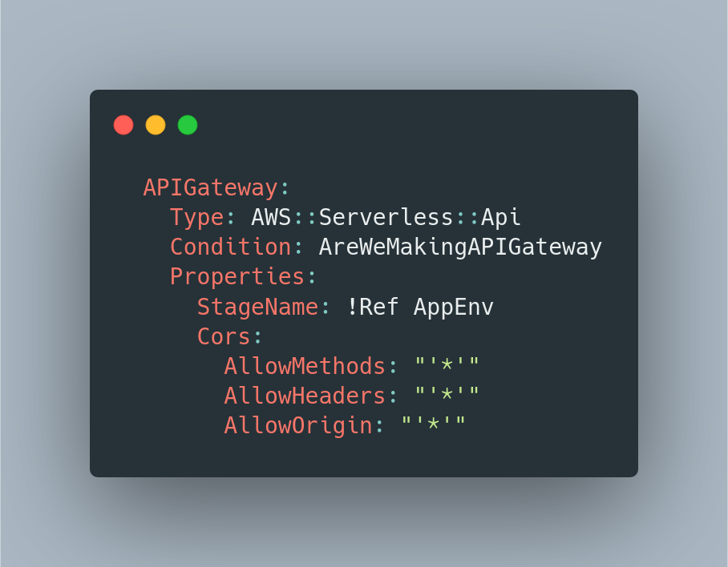

Serverless Applications on Amazon AWS

Serverless is a architecture that let you delegate to the cloud provider (AWS, Azure, GCP) the task of running and managing the infrastructure, which let you focus on your code itself. Pricing is based on resources consumed on the execution of the code, rather than pre-purchased units of computing. I've already covered about how to build a serverless API using AWS SAM and in this article I want to explain how the main AWS services can be combined to create powerful serverless apps.
Serverless architectures may benefit from significantly reduced operational cost, complexity, and engineering lead time, at a cost of increased reliance on vendor dependencies and comparatively immature supporting services.
Mike Roberts at Serverless Architecture
Serverless Computation on AWS
Lambda Functions
Let you run code without dealing with infrastructure configuration, provisioning or managing servers. You pay for the time it's running. It natively supports Python, Go, NodeJS, Ruby, C# and Java. It also provides built-in fault tolerance (its built to compute across multiple availability zone, to protect you against data center failures).
Lambda@Edge
It runs your code in response to events on your Amazon CloudFront (CDN), that helps you to run and scale your frontend globally, with high availability.
Databases
DynamoDB
A fast and flexible NoSQL database, ready to be integrated with Lambda functions.
Aurora Serverless
This is Amazon version of MySQL, where the database will automatically start up and shut down based on your application need.
Focus on your application, not the infrastructure.
SAM - Serverless Application Model
SAM is the framework from Amazon to help you build Serverless application on AWS. Combining sam-cli with boto3 (Python library), you have a powerful environment to build Serverless applications.
CloudFormation
CloudFormation enables you to create and provision infrastructure deployment. It lets you uses AWS services and control them directly on your code. This is used inside the SAM as a template.yaml file and it has an good documentation on how to use it.
SNS

Amazon Simple Notification Service provides a fully managed service using emails and mobile push notifications.
And with a simple Python function, using boto3 library, you'll be able to send message to the topic you just created (triggering emails or push notifications):
S3

Hosts web application static assets, and can be configured to be served through CloudFront. It can also be used to store user uploaded content, and can be accessed through your Lambda functions code using boto3 Python library.
API Gateway

You can run and manage an REST API that integrates with your Lambda functions to execute business logic, send and retrieve data to the database, includes traffic management, monitoring and API versioning.
The API Gateway is also used to manage cross-origin resource sharing (CORS) for your API, configure custom error responses and restrict access to your app to only some IP address (useful when you're developing an internal application that will going to be used only via VPN access).

Cognito
AWS Cognito is used for user management and as a identity provider. This tool can be used to manage user sign-up, sign-in, authorization, user groups and also provide built-in sign-in screens and federations (Facebook, Google, Amazon, SAML).
CloudFormation Designer
After a while building your application, you will be able to create a diagram describing it. To do that, you'll need to upload your template.yaml file into AWS CloudFormation Designer. It's a nice way to demonstrate how your application work for the stakeholders of the project.